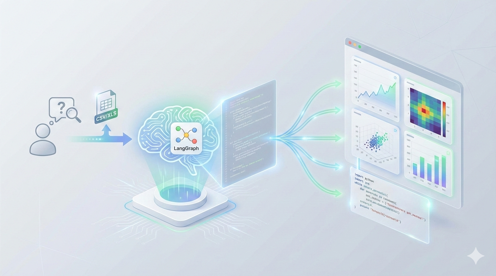
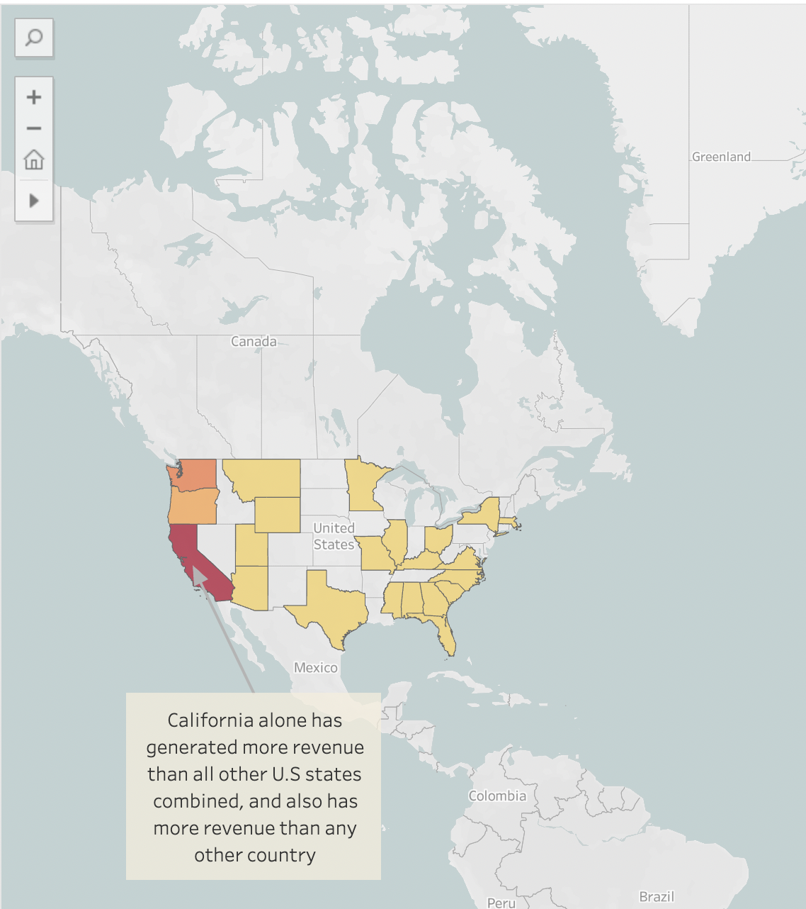
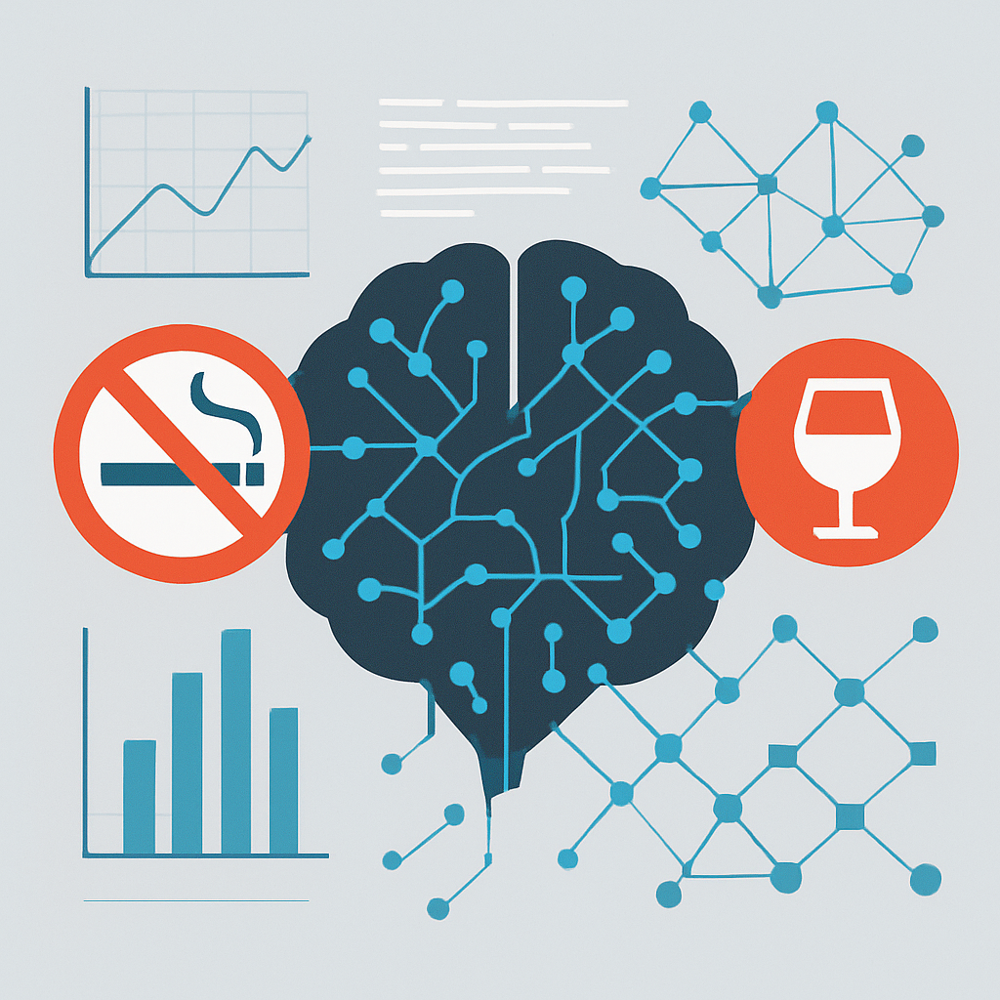

Projects

Flappy Kiro: Cloud Gaming Platform
An enterprise-grade cloud gaming platform demonstrating modern DevOps, Kubernetes orchestration, and comprehensive observability on AWS. Features 24+ pods across microservices, sub-100ms response times, 99.9% uptime, and a full monitoring stack with distributed tracing and real-time alerting.

Data Analysis Agent
An AI-powered Exploratory Data Analysis agent. Upload your dataset, ask questions in plain English, and get instant insights with auto-generated Python code and visualizations. Features LangGraph orchestration, secure sandbox execution, and rich visualizations using Matplotlib, Seaborn, and Plotly.
AI Research Paper Assistant
An offline-capable RAG-powered chatbot for secure, efficient summarization and Q&A on academic papers.
Fake Job Detection Portal
Leveraged NLP and ML to detect fraudulent job postings, using classification models and a Flask-based web app for real-time predictions.
Predicting Customer Revenue
Implemented Linear Regression, Lasso, Ridge, and M.A.R.S. using R (caret) to forecast customer revenue, applying 10-fold cross-validation.
Hospital Readmission Prediction
Trained Logistic Regression, Random Forests, and XGBoost models to predict patient readmission likelihood based on medical histories.

Database Design for PAN
Built an Azure SQL database and Java/JDBC application for patient assistance, including ER diagram, schema design, and indexing.

Financial Analysis of a Supermarket Chain
Created interactive Tableau dashboards to identify key products and demographics to optimize marketing and sales strategies.
Predicting Hospital Length of Stay
This project aims to analyze medical data to predict the length of stay (LOS) of patients in a hospital. Various machine learning models are trained and evaluated to predict the LOS based on demographic and medical information.

Predicting Smoking & Drinking Habits with EHR Data
An analytics pipeline developed in R that predicts individuals’ smoking and drinking behaviors using a suite of classification models